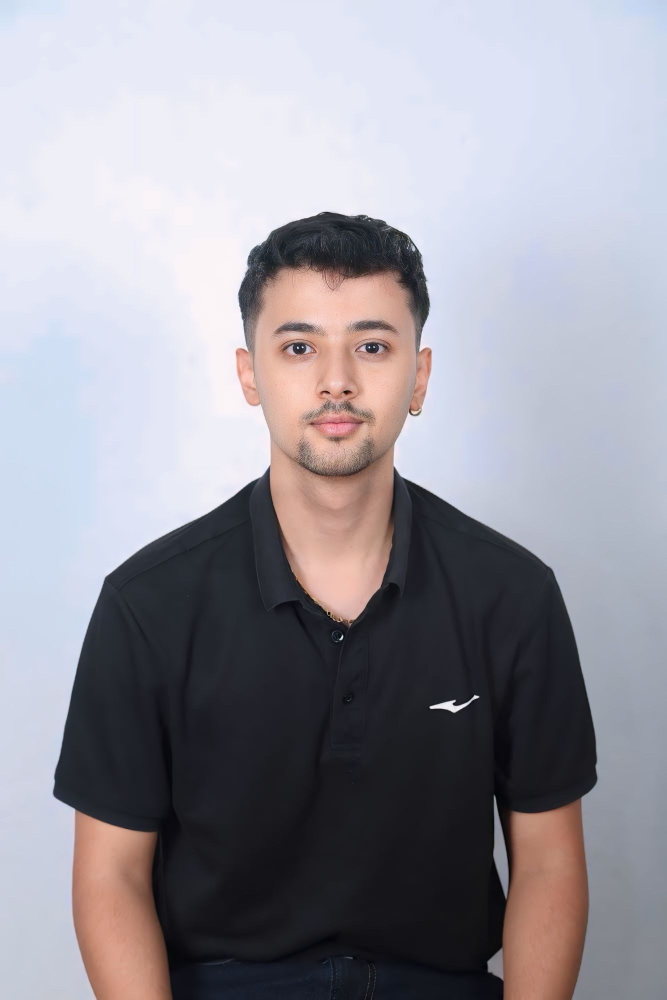

I'm Shishir Chaulagain.
A Civil Engineer.
A Civil Engineer.
I am a recent graduate in Civil Engineering from Tribhuvan University, passionately specializing in water resources engineering. My academic journey has been distinguished by multiple scholarships that acknowledge my dedication and academic excellence. My professional experiences are deeply rooted in research, particularly focusing on the intersection of remote sensing and climatic hazards, where I have leveraged advanced technologies such as machine learning and deep learning to address critical environmental challenges.
In my research projects, I have delved into the intricacies of water resource management and environmental impacts, utilizing cutting-edge tools to analyze and forecast hydrological data. These projects have provided me with a profound understanding of the dynamics of water systems and the potential impacts of climate change, aligning closely with current trends and challenges in the field.
Currently, I am working at Environment and Resource Management Consultants (ERMC) Pvt. Ltd., a premier engineering and management consulting firm in Nepal. My role involves contributing to a variety of innovative projects aimed at enhancing environmental sustainability and resource management practices. Here, I apply my research skills and technical expertise to develop solutions that not only address present environmental concerns but also anticipate future challenges in water resource management.
I am eager to further my research in water resources engineering and collaborate on projects that explore sustainable solutions for water management and climate resilience. My work experience and academic background have equipped me with the necessary skills to contribute effectively to cutting-edge research and innovation in this field.
My technical proficiency includes:

This project involved creating a detailed topographic map through extensive field surveys and leveraging CAD technology for accurate terrain depiction. It's essential for development planning and landscape analysis.

This research involved assessing various types of drought and their effects on agriculture. We examined historical data and satellite imagery to understand the correlation between drought occurrences and crop yield fluctuations, leading to valuable insights for sustainable agricultural practices.

This project involves creating time series plots of precipitation data retrieved from the NASA POWER API, utilizing Python programming. The focus is on extracting and visualizing precipitation trends over time to understand historical patterns.

This project involved applying shallow water equations to model the Muncie River channel in Indiana, utilizing HEC-RAS software.
Awarded for Completion of CS50P python programming course offered by Harvard University and Taught by David J. Malen
Awarded a merit-based scholarship for outstanding academic performance during the fifth and seventh semesters of my Bachelor’s program in Civil Engineering at Advanced college of Engineering and Management .

Awarded for Completion of Supervised Machine learning course offered by Stanford University and Taught by Andrew Ng.
Awarded for Completion of Delineation of Watershed using ArcSWAT by Udemy.
Awarded for Completion of 2D River Modelling in HEC-RAS offered by Udemy.
For project inquiries or collaboration opportunities, please reach out to me via: